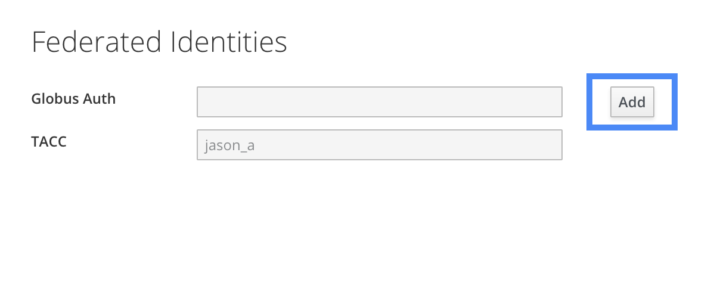
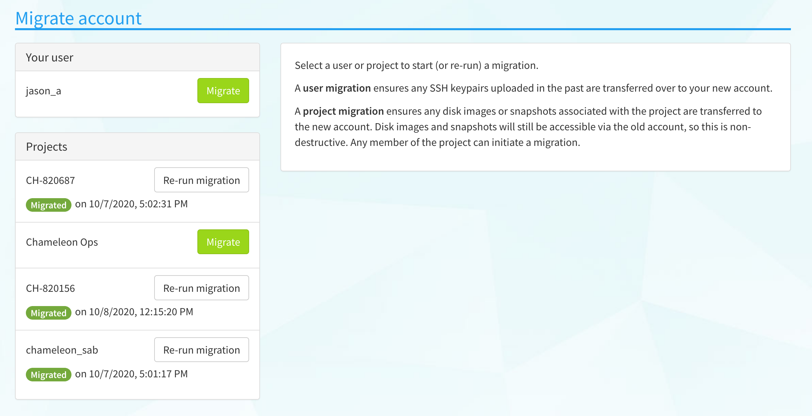

Federated login enables users to use a single set of credentials to log into
many different services. For example, federated login allows you to use your
institutional credentials to log into Chameleon–there is no need to create a
new account. To leverage its many benefits,
Chameleon is migrating to federated identity and will eventually drop support
for signing in via legacy Chameleon accounts. Existing Chameleon users can link
their existing Chameleon account to a federated identity account so that they
preserve their project memberships, disk images, volumes, SSH key pairs, and
other data saved over time.
To ease the transition, during the migration period
you can log in via your old Chameleon account as well as the federated account.
Existing users however are highly encouraged to migrate to a federated account
as soon as possible. Read more about federated identity, how it has been
implemented, as well as the migration schedule in our FAQ.
Important
Existing Chameleon users should go through the following account linking
process before attempting to sign in with federated identity. Signing in
before linking accounts can lead to you accidentally creating a new Chameleon
account, if we cannot match the email address on your federated account to
the one you used when registering for Chameleon.
Once authenticated, you will be taken to a page showing all the identities
(credentials) linked to your Chameleon user account. Click the “Add”
button next to the entry for the Globus identity to iniate another login
via federated identity. You can pick whichever login method you choose; your
federated identity need not be tied to the same email address or username as
your existing Chameleon account if you wish.

Once added, your linked federated identity can be used to log in to your
existing Chameleon account in the future, and you no longer need to use your
Chameleon username and password to login to any part of the Chameleon
infrastructure.
If you try to log in to any of the testbed sites with your linked federated
identity, you may notice that some of your data is missing, namely:
disk images, snapshots and volumes you or other project members have
created in the past,
active or pending leases you made,
SSH keypairs you previously associated with your account, and
active server instances launched recently
Migrating to federated identity effectively creates a new account for you in
the system, so in order to retain access to some of your saved data, a short
data migration is necessary.
Go to themigration page in the Chameleon user
portal to start this process (note: ensure you now log in to the user
portal using federated login, and not the old sign-in page!)
You should see a page that looks like the following.

Important
Not all data can be migrated to your new account. Leases and active server
instances will remain on your old account. If you wish to access these,
you can log in to the testbed site using the old sign in method.
Trigger a migration of your user to copy over any SSH keypairs you
previously associated with your account.
Trigger migrations of projects you are a member of to associate any disk
images, snapshots and volumes to your new account. This only needs to be
done once by any member of the project, but can also be re-run in the event
that you or other project members create disk images/snapshots under their
old account.
You should now have access to your old data via your new account linked to
your federated identity!
If you use the command line interface when interacting with
Chameleon (or use another tool that interfaces directly with Chameleon’s APIs),
you will no longer be able to authenticate with a username and password. You
should re-download your RC file and use it when invoking
the CLI, as it will have new authentication parameters compatible with your
account pre-filled.
You can also look in to generating an application credential for your command line client or app, which may be
simpler.